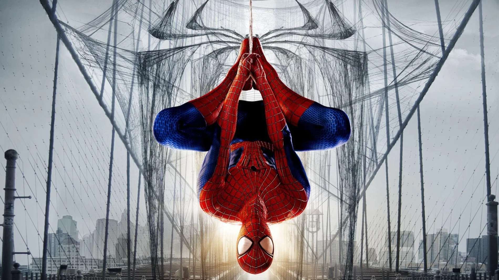

Spider-Man
Spider-Man, cuyo nombre verdadero es Peter Parker, es uno de los héroes más conocidos y queridos de Marvel Comics. Creado por Stan Lee y Steve Ditko, apareció por primera vez en 1962 y desde entonces se convirtió en un símbolo de la juventud, la responsabilidad y la esperanza. A diferencia de otros superhéroes que suelen tener un origen casi divino o militar, Peter Parker representa a una persona común y corriente que se ve obligada a enfrentar enormes responsabilidades después de un accidente que cambia su vida para siempre.
La historia de Spider-Man comienza cuando Peter Parker, un estudiante tímido y brillante, asiste a la Escuela Midtown High en Nueva York. Es un joven inteligente, curioso y algo inseguro, que se siente más cómodo con sus estudios y su afición por la ciencia que con la popularidad o la vida social. A pesar de esto, su personalidad se distingue por su enorme sentido del deber, su empatía y su capacidad para sacrificarse por los demás. Es precisamente esa mezcla de vulnerabilidad y valentía la que convierte a Spider-Man en un héroe tan cercano al público.
Todo cambia cuando Peter visita una exhibición científica y es mordido por una araña radiactiva. El veneno del arácnido no solo le otorga una fuerza y agilidad sobrehumanas, sino que también le infunde una sensibilidad extraordinaria para detectar peligros, una rapidez increíble y la capacidad de trepar por paredes. Además, su reflejo y equilibrio mejoran de forma descomunal, lo que le permite ejecutar acrobacias y maniobras imposibles para cualquier humano. Sin embargo, el mayor cambio no es físico: Peter descubre que con grandes poderes también llega una gran responsabilidad, una frase que se convertiría en el eje moral del personaje.
La evolución de Spider-Man no se limita a sus habilidades. Peter Parker es un héroe que lucha no solo contra enemigos poderosos, sino también contra sus propios errores y conflictos emocionales. Su identidad secreta es un peso constante. Cada vez que se pone el traje, debe equilibrar su vida como estudiante, su trabajo como fotógrafo para el Daily Bugle, sus relaciones personales y la protección de la ciudad. Esa dualidad lo hace muy humano: no es un guerrero invulnerable ni un personaje distante, sino alguien que sufre, falla, aprende y sigue adelante.

Uno de los grandes atractivos de Spider-Man es la variedad de villanos y desafíos que enfrenta. Desde Green Goblin, uno de sus enemigos más icónicos, hasta Doctor Octopus, Venom, Sandman, Lizard y muchos más, cada adversario representa una amenaza distinta y pone a prueba distintas facetas del héroe. Spider-Man no solo se enfrenta a enemigos con fuerza bruta, sino que también debe lidiar con dilemas morales, la presión de la fama, la manipulación y la tragedia. Su lucha no siempre termina con una victoria limpia, y justamente por eso su historia es tan fascinante.
Además, su relación con la ciudad de Nueva York es fundamental. Spider-Man no es solo un héroe que salva a la gente de una amenaza aislada; es el protector de una metrópoli llena de historias, pobreza, esperanza y diversidad. Su presencia convierte cada rincón de la Gran Manzana en un escenario donde el valor, la solidaridad y la justicia cobran sentido. Esa conexión con la vida cotidiana es una de las grandes razones por las que Spider-Man sigue siendo tan poderoso como personaje: no vive en un mundo lejano o imposible, sino en uno que se parece mucho al nuestro.
Desde una perspectiva emocional, Spider-Man es un personaje profundamente humano. Tiene miedo, dudas, frustraciones y momentos de desesperación. Sufre por sus seres queridos, se siente responsable por sus errores y muchas veces se cuestiona si realmente vale la pena seguir adelante. Sin embargo, también tiene un enorme corazón. Cuando alguien necesita ayuda, no duda en arriesgarlo todo. Esa combinación de vulnerabilidad y sacrificio lo vuelve especialmente cautivador para lectores de todas las edades, porque representa la idea de que incluso una persona común puede tomar decisiones extraordinarias.
Otro elemento que define al personaje es su sentido del humor. A pesar de los momentos difíciles, Spider-Man suele reaccionar con ingenio, sarcasmo y una energía juvenil que humaniza su figura. En muchas historias, sus comentarios y su manera de enfrentar situaciones hacen que la tensión se alivie sin restar dramatismo. Esa mezcla de emoción, acción y humor ha hecho que millones de personas se identifiquen con él.
Con el paso del tiempo, Spider-Man ha trascendido los cómics y se ha convertido en un icono cultural global. Ha aparecido en películas, series animadas, videojuegos, cómics, novelas y productos de merchandising. Cada adaptación ha intentado acercarse a lo esencial del personaje: un chico normal con un enorme corazón y un sentido excepcional de la responsabilidad. En todas las versiones, Peter Parker sigue siendo esa figura que demuestra que el verdadero poder no está solo en la fuerza física, sino también en la voluntad, la empatía y la perseverancia.
En resumen, Spider-Man es mucho más que un héroe con telarañas y habilidades sobrehumanas. Es un símbolo de la responsabilidad, la humanidad y la capacidad de actuar bien incluso en las circunstancias más difíciles. Peter Parker representa la idea de que todos, en algún punto, debemos elegir cómo usaremos nuestro potencial, y que una persona común puede convertirse en el ejemplo de valentía para muchos. Por eso, Spider-Man sigue siendo uno de los personajes más importantes y queridos del universo Marvel.